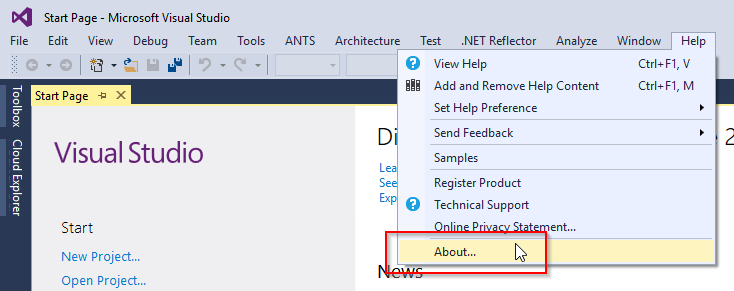
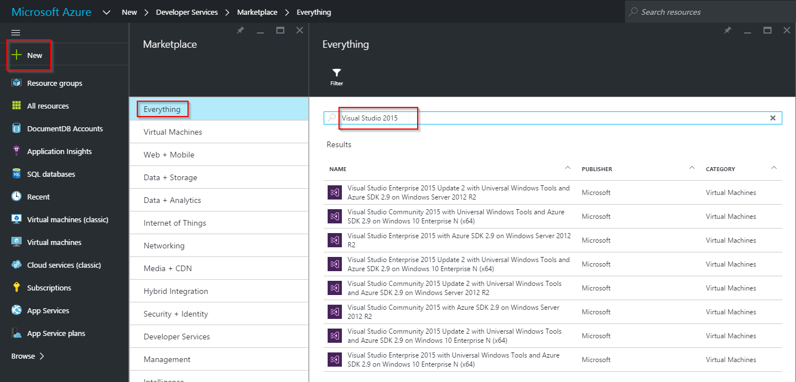

Introduction
Welcome
Introduction of participants
Training overview
Organizational matters
Content
- Modern web-development in DevOps teams
- Continuous delivery with VSTS
- Using Microsoft Azure for dev/test/prod
- Cross-platform web-development, Docker
Goals
- Understand DevOps end-to-end
- Broad content, cross-disciplinary
- No dev or ops deep-dive
- Favor demos and hands-on over slides
Training Structure
-
Presentation
A few slides, focus on short demos
-
Time for hands-on
Free-style or step-by-step, depending on your experience
Exercises
Organizational Matters
-
Time schedule
Starting time, breaks, lunch, end times
-
Breaks
Coffee, snacks, drinks, lunch
-
Code of conduct
Follow rules of venue (e.g. smoking), punctuality, etc.
-
Materials
Everything is available on GitHub
Setting up the Environment
Do you have all prerequisites?
Please bring your own laptop
Visual Studio
Microsoft Azure
Visual Studio Team Services
Visual Studio
-
Visual Studio 2015
Latest version: Update 2
(Preview of Visual Studio "15" available, not used here)

-
How to get it?
Download
- Community Ed. and Visual Studio Code are free, trial for Enterprise Ed. available
Note that we are going to use Enterprise Ed. features during the exercises
Compare editions
Visual Studio on Azure
You can use an Azure VM instead of installing Visual Studio locally

Tools and Extensions
Note: ASP.NET 5, Core 1.0, and .NET Core 1
Visual Studio Team Services
Setting up our code sample
NuGet
OWIN
Learning
-
Create a RESTful Web API project with OWIN from scratch
No dev deep-dive, focus on DevOps topics
-
Why is NuGet important?
External components, internal code-sharing
-
How OWIN and ASP.NET Core 1.0 change the role of IIS
Self-hosting, cross-platform
Resource Groups
Manage Azure in Visual Studio
Manage Azure with the Portal
Manage Azure with PowerShell
Learning
-
Azure Resource Groups
Importance, management
-
Connecting Visual Studio with Azure
Devs can stay in their dev environment
-
Manage Azure with PowerShell
Automate administrative tasks
-
Azure Storage Basics
Shared Access Signatures
Test Projects in Visual Studio
Mocking Dependencies
Self-hosting OWIN
Learning
-
Basics about automated testing
Why? Typical problems? Visual Studio support
-
Mocking of dependencies
Microsoft Fakes
-
Self-hosted OWIN for automated tests
Exercise 4: Application Insights
Telemetry
Logging
Learning
-
Basics about telemetry and logging
Why? Typical problems? Role of Application Insights
-
Creating Application Insights in Azure
-
Connecting Application Insights to .NET web apps
-
Viewing Application Insights data
Portal, Visual Studio
Creating, configuring, deploying and troubleshooting App Services Web Apps
Learning
-
What is Azure App Services?
Why? Differences to VMs and Containers?
-
Publishing Web Apps from Visual Studio
Connecting Visual Studio, deployment with Web Deploy
-
Configuring App Services
Deployment slots, slot settings
-
Troubleshooting App Services
Remote Debugging
Continuous Deployment
Visual Studio Team Services
Learning
-
Visual Studio Team Services overview
Focus on source code management, build, and release management
-
Configuring automated build
-
Connecting VSTS and Azure
Service endpoints
-
Configuring release management
Azure Resource Manager
ARM Templates
Learning
-
ARM Introduction
What is it used for? What features does it offer?
-
ARM Templates
Creating resources with ARM templates
-
Tips for ARM Template creation and management
Visual Studio integration, Quickstarts
ASP.NET Core 1.0
Docker Containers
Learning
-
ASP.NET Core 1.0
What has changed?
-
Open Source tools in Visual Studio
Grunt, Gulp & Co.
-
Using Docker Containers
Docker and Microsoft, Docker in Azure, Docker and .NET